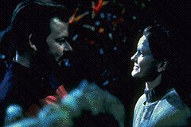

|

Texto de
Susana
Lopes de Alexandria

De
que so feitas as meninas?

|
Quando a andrgena Soren pergunta ao comandante Riker qual a diferena entre homens e mulheres, no episdio "The Outcast", ele brinca respondendo com os versos de uma cano de ninar -- "meninos so feitos de rabos de cachorrinhos" e "meninas de acar e perfume". Soren no compreende e pergunta se os homens tm rabo, como os cachorros!  Todos os falantes nativos da lngua inglesa conhecem esses versos, de autor annimo, que falam sobre as diferenas entre meninos e meninas. Foi desta mesma cano que tiraram o ttulo do episdio "What are Little Girls Made of?", da Srie Clssica. Leia abaixo a letra da cano (no original e numa traduo livre). What
are little boys made of, made of? What
are little girls made of, made of? What
are young men made of, made of? What
are young women made of? =============== De
que so feitos os garotinhos? De
que so feitas as garotinhas? De
que so feitos os rapazes? De
que so feitas as moas? |